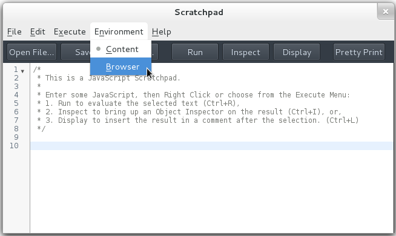

Tutorial: Evaluate an Expression When a debugger; Statement Is Executed
This page shows how you can try out the Debugger API yourself using Firefox’s Scratchpad. We use the API to evaluate an expression in the web page whenever it executes a JavaScript debugger; statement.
Visit the URL
about:config, and set thedevtools.chrome.enabledpreference totrue:
Setting the ‘devtools.chrome.enabled’ preference
Save the following HTML text to a file, and visit the file in your browser:
<div onclick="var x = 'snoo'; debugger;">Click me!</div>Open a developer Scratchpad (Menu button > Developer > Scratchpad), and select “Browser” from the “Environment” menu. (This menu will not be present unless you have changed the preference as explained above.)
Selecting the ‘browser’ context in the Scratchpad
Enter the following code in the Scratchpad:
// This simply defines 'Debugger' in this Scratchpad; // it doesn't actually start debugging anything. Components.utils.import("resource://gre/modules/jsdebugger.jsm"); addDebuggerToGlobal(window); // Create a 'Debugger' instance. var dbg = new Debugger; // Get the current tab's content window, and make it a debuggee. var w = gBrowser.selectedBrowser.contentWindow.wrappedJSObject; dbg.addDebuggee(w); // When the debuggee executes a 'debugger' statement, evaluate // the expression 'x' in that stack frame, and show its value. dbg.onDebuggerStatement = function (frame) { alert('hit debugger statement; x = ' + frame.eval('x').return); }In the Scratchpad, ensure that no text is selected, and press the “Run” button.
Now, click on the text that says “Click me!” in the web page. This runs the
divelement’sonclickhandler. When control reaches thedebugger;statement,Debuggercalls your callback function, passing aDebugger.Frameinstance. Your callback function evaluates the expressionxin the given stack frame, and displays the alert:
The Debugger callback displaying an alert
Press “Run” in the Scratchpad again. Now, clicking on the “Click me!” text causes two alerts to show—one for each
Debuggerinstance.Multiple
Debuggerinstances can observe the same debuggee. Re-running the code in the Scratchpad created a freshDebuggerinstance, added the same web page as its debuggee, and then registered a freshdebugger;statement handler with the new instance. When you clicked on thedivelement, both of them ran. This shows how any number ofDebugger-based tools can observe a single web page simultaneously—although, since the order in which their handlers run is not specified, such tools should probably only observe, and not influence, the debuggee’s behavior.Close the web page and the Scratchpad.
Since both the Scratchpad’s global object and the debuggee window are now gone, the
Debuggerinstances will be garbage collected, since they can no longer have any visible effect on Firefox’s behavior. TheDebuggerAPI tries to interact with garbage collection as transparently as possible; for example, if both aDebugger.Objectinstance and its referent are not reachable, they will both be collected, even while theDebuggerinstance to which the shadow belonged continues to exist.
Source Metadata
- Generated from file:
- js/src/doc/Debugger/Tutorial-Debugger-Statement.md
- Watermark:
- sha256:184aaa9fbfea1641929cea7053c8b0e036fcfe337295eab5fe6cf91da5d8dadb
- Changeset:
- 46e56275f2b2